"Information architecture (IA) focuses on organizing, structuring, and labeling content in an effective and sustainable way. The goal is to help users find information and complete tasks. To do this, you need to understand how the pieces fit together to create the larger picture, how items relate to each other within the system."
- usability.gov
Information Architecture
Components of Information Architecture
Organization
How you categorize and structure information.
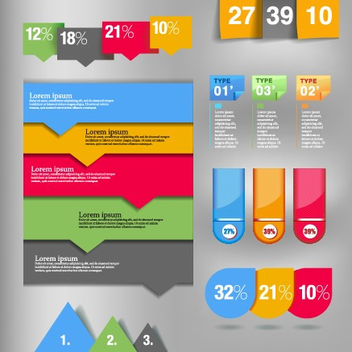
Labeling Systems
How you represent information.
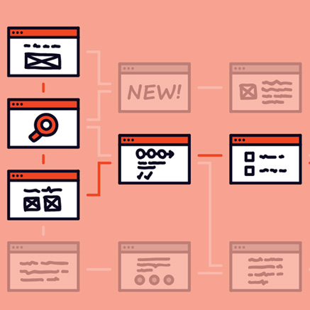
Navigation Systems
How users browse or move through information.
Search Systems
How users look for information.
Visual Hierarchy
Components of Visual Hierarchy
Positioning
Placement of visual elements will impact the order in which a viewer consumes them.
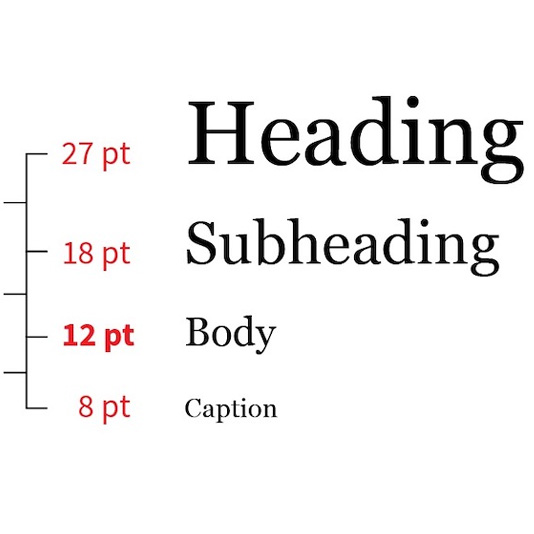
Size
The size of elements has a huge impact on what viewers will perceive as primary, secondary, or tertiary information.
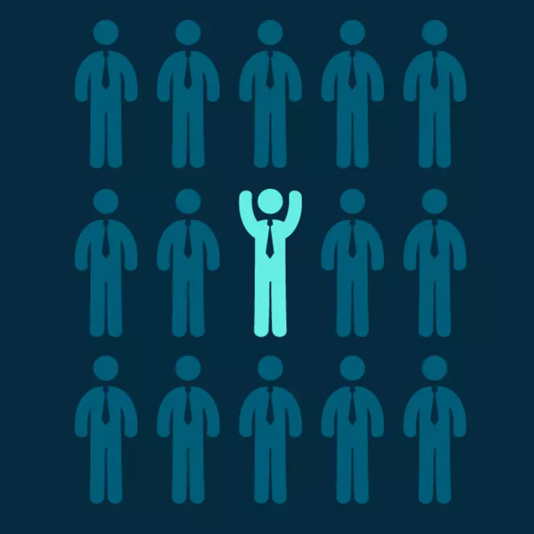
Contrast
Increased contrast between foreground and background elements will increase the prominance of an element.
Color
Color can effectively be used to categorize information.
Visual Identity
Components of Visual Identity
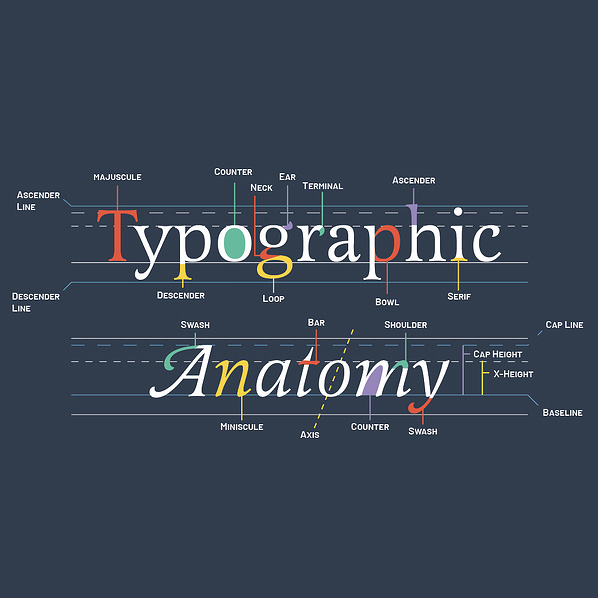
Typography
Selection of type faces and styles that are consistently applied across your web experience.
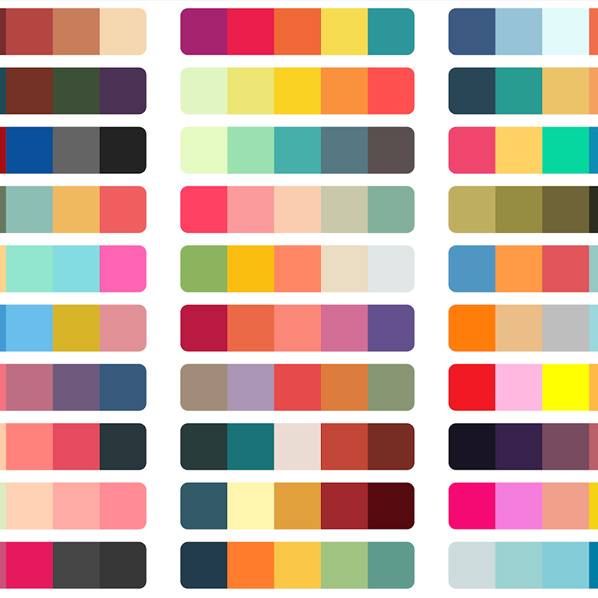
Color
A limited color palette used to clearly communicate information and apply branding to content.
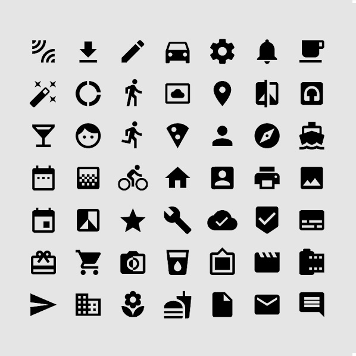
Iconography
Consistent design to symbols, icons, illustrations, navigation elements.
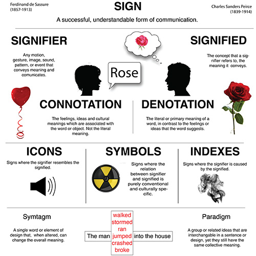
Semiotics
The science of signs. How are you communicating brand values through imagery and symbolism?
Techniques for Web Design
Techniques for Web Design
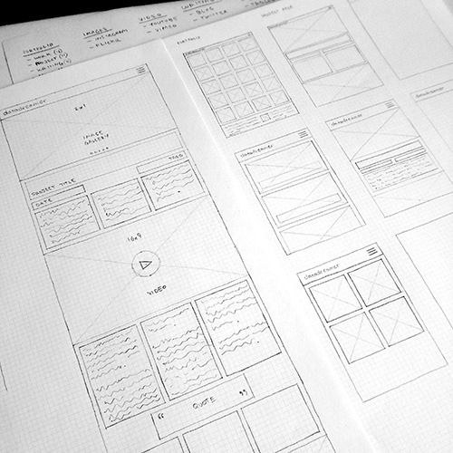
Wireframing
Wireframing is a rough way of iterating on the structure and positioning of how information will be laid out on your page.
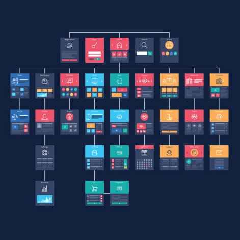
Sitemap
A sitemap allows you to diagram the interconnectivity between pages and the flow through which a user can experience the content.
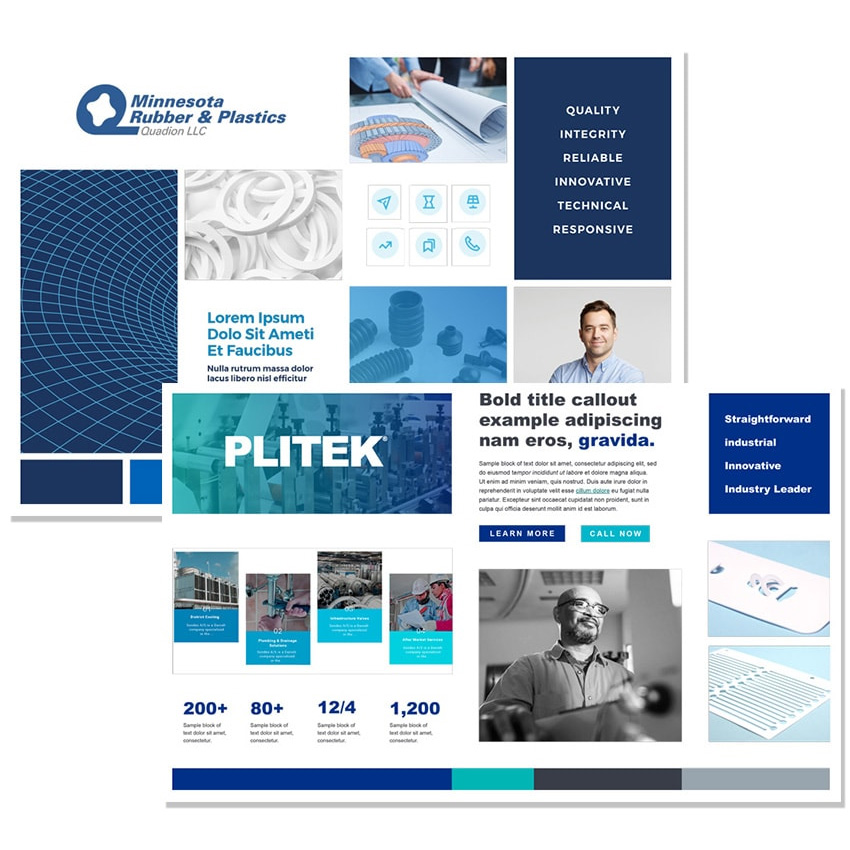
Moodboarding
Collecting third party visual assets as inspiration for the direction to take your visual identity development.
Mockups
Refined static versions to convey the appearance of your different webpages to be later implemented using HTML/CSS.